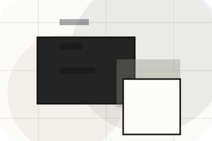
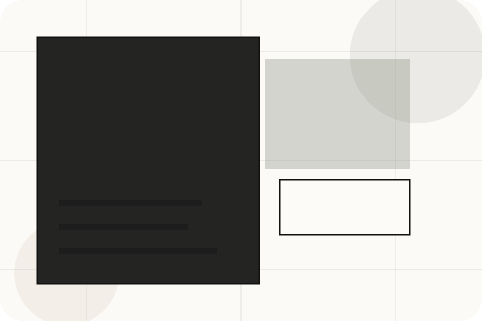
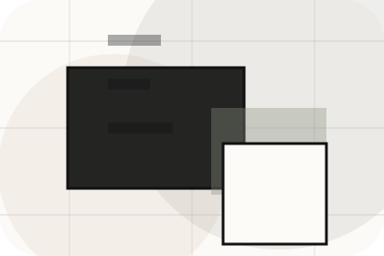
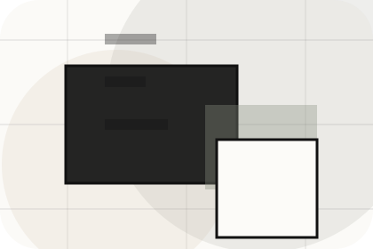
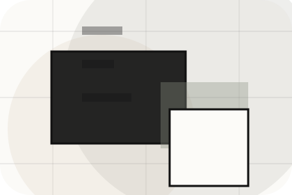
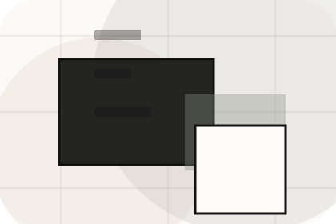
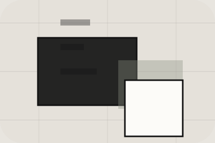

Guide
A useful entry point for visitors who need more context before they get a valuation.
Resources / 01
Resources opens as a clear real estate decision hub: what Urban offers, who it helps, why it matters, and which route to take first.
The first screen combines positioning, proof, primary action, and fast internal navigation, so people can act immediately or compare the rest of the resources route with context.
Architectural listing hero
Select the closest route and Urban keeps the next step, proof, and follow-up expectation aligned with market confidence and discovery.

Resources / 02
Buyers gives researching visitors a practical route into guides, checklists, and comparison material without leaving the site structure.
Each resource behaves like a useful internal link, giving cold and warm visitors a way to learn, compare, and return to the action path.
Explore ResourcesUrban structures buyers around guide, checklist, and a clear next route so visitors can compare the block quickly before they get a valuation.
Get ValuationResources / 04
Landlords gives researching visitors a practical route into guides, checklists, and comparison material without leaving the site structure.
Each resource behaves like a useful internal link, giving cold and warm visitors a way to learn, compare, and return to the action path.
Explore ResourcesA useful entry point for visitors who need more context before they get a valuation.
A scannable comparison aid that makes research usable before the next decision.

A route back to support, services, or contact when the visitor is ready to act.
Resources / 05
Checklists gives researching visitors a practical route into guides, checklists, and comparison material without leaving the site structure.
Each resource behaves like a useful internal link, giving cold and warm visitors a way to learn, compare, and return to the action path.
Explore ResourcesA useful entry point for visitors who need more context before they get a valuation.
A scannable comparison aid that makes research usable before the next decision.
A route back to support, services, or contact when the visitor is ready to act.
Resources / 06
Reports gives researching visitors a practical route into guides, checklists, and comparison material without leaving the site structure.
Each resource behaves like a useful internal link, giving cold and warm visitors a way to learn, compare, and return to the action path.
Explore ResourcesA useful entry point for visitors who need more context before they get a valuation.
A scannable comparison aid that makes research usable before the next decision.
A route back to support, services, or contact when the visitor is ready to act.
A useful entry point for visitors who need more context before they get a valuation.
Open resource
ChecklistA scannable comparison aid that makes research usable before the next decision.
Open resourceA route back to support, services, or contact when the visitor is ready to act.
Open resourceResources / 07
Documents gives researching visitors a practical route into guides, checklists, and comparison material without leaving the site structure.
Each resource behaves like a useful internal link, giving cold and warm visitors a way to learn, compare, and return to the action path.
Explore ResourcesUrban structures documents around guide, checklist, and a clear next route so visitors can compare the block quickly before they get a valuation.
Get ValuationResources / 08
Downloads gives researching visitors a practical route into guides, checklists, and comparison material without leaving the site structure.
Each resource behaves like a useful internal link, giving cold and warm visitors a way to learn, compare, and return to the action path.
View Resources
A useful entry point for visitors who need more context before they get a valuation.
A useful entry point for visitors who need more context before they get a valuation.
Open resourceA scannable comparison aid that makes research usable before the next decision.
Open resource
BriefA route back to support, services, or contact when the visitor is ready to act.
Open resourceResources / 09
Learn gives researching visitors a practical route into guides, checklists, and comparison material without leaving the site structure.
Each resource behaves like a useful internal link, giving cold and warm visitors a way to learn, compare, and return to the action path.
Explore ResourcesA useful entry point for visitors who need more context before they get a valuation.
A scannable comparison aid that makes research usable before the next decision.
A route back to support, services, or contact when the visitor is ready to act.
Resources / 10
Urban closes the resources route with a clear action, a quick reminder of the value, and a low-friction way to get a valuation.
Visitors who are ready can use the primary action. Visitors who are still comparing can scan the section links, proof, and support routes before they get a valuation.
Get ValuationThe final block keeps the choice simple: act now, compare one more proof route, or send enough detail for a focused response.
Get Valuationmarket confidence and discovery
A real-estate editorial site with architecture-led listings, sparse navigation, area guides, and valuation flow. Resources ends with a direct path to get a valuation, plus enough context for visitors who still need to compare.

Get ValuationInformation is provided for planning and should be reviewed for the final client, location, and operating rules.